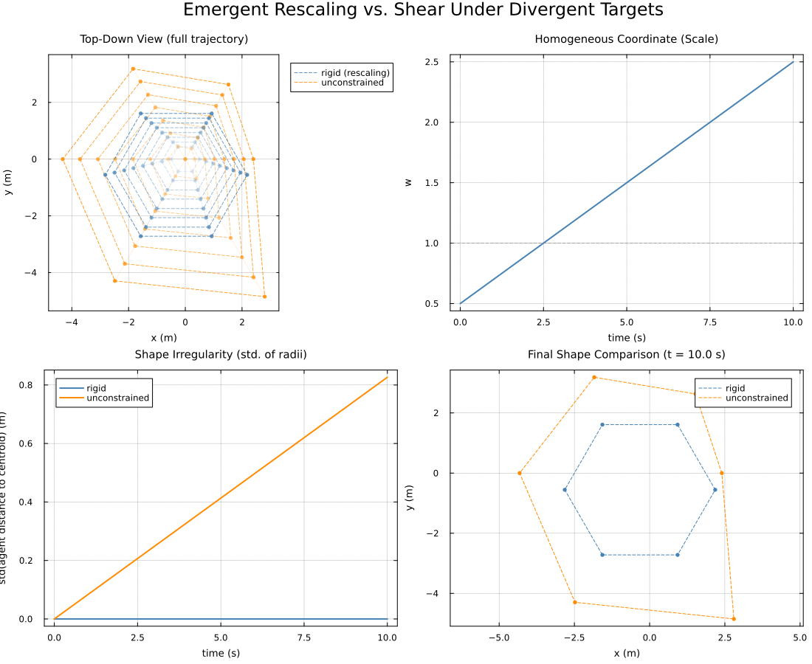
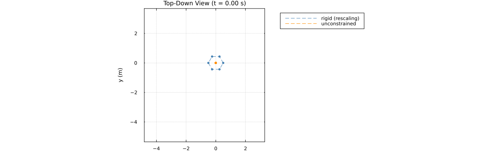

Emergent Rescaling: A Rigid Team Absorbing Divergent Targets Through Scale
The homogeneous-coordinate drift the other pages work to suppress is, used deliberately, a useful degree of freedom.
Elsewhere in this section translation_pin exists precisely to stop several redundant pins from dragging the affine homogeneous coordinate away from 1 and rescaling a rigid body as an unwanted side effect. This page does the opposite on purpose: it uses full, untruncated project(k) pins and lets the drift happen.
The mechanism
A rigid team's space of exact global sections is D-dimensional pure translation: D-1 translation coordinates, plus a homogeneous row normally locked at 1.
Now pin each agent to a different target – not several agents to the same target, as in centroid_formation_tracking.jl. Those pins are jointly satisfiable only if the targets happen to sit at exactly the team's nominal relative geometry. As soon as they do not, the harmonic solve's least-squares compromise does more than translate the team: it also picks the homogeneous coordinate w that best explains the mismatch.
And because these affine restriction maps scale every translation offset by w, choosing w rescales the whole rigid body uniformly – without ever bending an angle.
Setup
Six targets start at a common origin and diverge outward along a rigid hexagon's own six nominal directions, but at six different rates, so their spread is deliberately not a uniform scaling of the hexagon.
A 6-agent rigid ring, one agent pinned to each target, has only a shared translation-plus-scale to offer in response. The comparison is against an unconstrained placement: six independent, unconnected points, one per target, free to trace whatever irregular shape those divergence rates actually produce.
using CellularSheaves
using CellularSheaves.ControlSheaves.NestedSystems
using CellularSheaves.ControlSheaves.NestedDSL
using LinearAlgebra
using Statistics
using Plots
using Printf
# Located from the package root, not `@__DIR__`: while Literate.jl executes a page, `@__DIR__`
# points at the *output* directory rather than at this file.
include(joinpath(pkgdir(CellularSheaves), "docs", "literate", "nested", "_plot_helpers.jl"))Main.var"##3294".fade_alphaTopology: one rigid ring, every agent individually pinned
const N = 6
const D = 4
const h_alt = 1.5
# Written in the `NestedDSL` language. The `for` loop is Julia's own -- `@nested_system`
# runs its block rather than quoting it -- and `$(...)` marks a computed name.
#
# The `project(formation, k)` pins are deliberately full and untruncated: no `redundant_pin` or
# `translation_pin` here, since letting the homogeneous coordinate drift is the whole point.
system = compile_nested_system(@nested_system begin
@dim D
@team formation = ring(N; radius=1.0)
for k in 1:N
@target $(Symbol(:t, k))
@observe project(formation, k) => $(Symbol(:t, k))
end
end)
spec, tower = system.spec, system.tower(CellularSheaves.ControlSheaves.NestedSystems.NestedSystemSpec(CellularSheaves.ControlSheaves.NestedSystems.RefinedSystem(:root, CellularSheaves.ControlSheaves.NestedSystems.AbstractSystemNode[CellularSheaves.ControlSheaves.NestedSystems.LeafTeam(:formation, :ring, 6, 1.0, [1])], CellularSheaves.ControlSheaves.NestedSystems.SystemEdge[]), CellularSheaves.ControlSheaves.NestedSystems.TargetSpec[CellularSheaves.ControlSheaves.NestedSystems.TargetSpec(:t1), CellularSheaves.ControlSheaves.NestedSystems.TargetSpec(:t2), CellularSheaves.ControlSheaves.NestedSystems.TargetSpec(:t3), CellularSheaves.ControlSheaves.NestedSystems.TargetSpec(:t4), CellularSheaves.ControlSheaves.NestedSystems.TargetSpec(:t5), CellularSheaves.ControlSheaves.NestedSystems.TargetSpec(:t6)], CellularSheaves.ControlSheaves.NestedSystems.Observation[CellularSheaves.ControlSheaves.NestedSystems.Observation([1], 1, CellularSheaves.ControlSheaves.NestedSystems.ProjectMember(1)), CellularSheaves.ControlSheaves.NestedSystems.Observation([1], 2, CellularSheaves.ControlSheaves.NestedSystems.ProjectMember(2)), CellularSheaves.ControlSheaves.NestedSystems.Observation([1], 3, CellularSheaves.ControlSheaves.NestedSystems.ProjectMember(3)), CellularSheaves.ControlSheaves.NestedSystems.Observation([1], 4, CellularSheaves.ControlSheaves.NestedSystems.ProjectMember(4)), CellularSheaves.ControlSheaves.NestedSystems.Observation([1], 5, CellularSheaves.ControlSheaves.NestedSystems.ProjectMember(5)), CellularSheaves.ControlSheaves.NestedSystems.Observation([1], 6, CellularSheaves.ControlSheaves.NestedSystems.ProjectMember(6))], 4, true), CellularSheaves.ControlSheaves.NestedSystems.SheafTower(CellularSheaves.ControlSheaves.NestedSystems.NestedSystemSpec(CellularSheaves.ControlSheaves.NestedSystems.RefinedSystem(:root, CellularSheaves.ControlSheaves.NestedSystems.AbstractSystemNode[CellularSheaves.ControlSheaves.NestedSystems.LeafTeam(:formation, :ring, 6, 1.0, [1])], CellularSheaves.ControlSheaves.NestedSystems.SystemEdge[]), CellularSheaves.ControlSheaves.NestedSystems.TargetSpec[CellularSheaves.ControlSheaves.NestedSystems.TargetSpec(:t1), CellularSheaves.ControlSheaves.NestedSystems.TargetSpec(:t2), CellularSheaves.ControlSheaves.NestedSystems.TargetSpec(:t3), CellularSheaves.ControlSheaves.NestedSystems.TargetSpec(:t4), CellularSheaves.ControlSheaves.NestedSystems.TargetSpec(:t5), CellularSheaves.ControlSheaves.NestedSystems.TargetSpec(:t6)], CellularSheaves.ControlSheaves.NestedSystems.Observation[CellularSheaves.ControlSheaves.NestedSystems.Observation([1], 1, CellularSheaves.ControlSheaves.NestedSystems.ProjectMember(1)), CellularSheaves.ControlSheaves.NestedSystems.Observation([1], 2, CellularSheaves.ControlSheaves.NestedSystems.ProjectMember(2)), CellularSheaves.ControlSheaves.NestedSystems.Observation([1], 3, CellularSheaves.ControlSheaves.NestedSystems.ProjectMember(3)), CellularSheaves.ControlSheaves.NestedSystems.Observation([1], 4, CellularSheaves.ControlSheaves.NestedSystems.ProjectMember(4)), CellularSheaves.ControlSheaves.NestedSystems.Observation([1], 5, CellularSheaves.ControlSheaves.NestedSystems.ProjectMember(5)), CellularSheaves.ControlSheaves.NestedSystems.Observation([1], 6, CellularSheaves.ControlSheaves.NestedSystems.ProjectMember(6))], 4, true), EuclideanSheaf{Float64}[A network sheaf with 7 vertex stalks and 6 edge stalks.
, A network sheaf with 12 vertex stalks and 12 edge stalks.
], GraphHomomorphism[GraphHomomorphism: 12 source vertices → 7 target vertices
vertex_map: [1, 2, 3, 4, 5, 6, 7, 7, 7, 7, 7, 7]
fiber sizes: [1, 1, 1, 1, 1, 1, 6]
], [[[1.0 0.0 0.0 0.0; 0.0 1.0 0.0 0.0; 0.0 0.0 1.0 0.0; 0.0 0.0 0.0 1.0], [1.0 0.0 0.0 0.0; 0.0 1.0 0.0 0.0; 0.0 0.0 1.0 0.0; 0.0 0.0 0.0 1.0], [1.0 0.0 0.0 0.0; 0.0 1.0 0.0 0.0; 0.0 0.0 1.0 0.0; 0.0 0.0 0.0 1.0], [1.0 0.0 0.0 0.0; 0.0 1.0 0.0 0.0; 0.0 0.0 1.0 0.0; 0.0 0.0 0.0 1.0], [1.0 0.0 0.0 0.0; 0.0 1.0 0.0 0.0; 0.0 0.0 1.0 0.0; 0.0 0.0 0.0 1.0], [1.0 0.0 0.0 0.0; 0.0 1.0 0.0 0.0; 0.0 0.0 1.0 0.0; 0.0 0.0 0.0 1.0], [1.0 0.0 0.0 0.0; 0.0 0.0 0.0 1.0; -0.0 0.0 1.0 -0.0; 0.6666666666666667 -0.6666666666666667 -0.0 0.0; 0.6666666666666666 0.3333333333333335 -0.0 0.0; 0.5773502691896258 -0.5773502691896257 -0.0 1.0; -0.0 0.0 1.0 -0.0; 0.6666666666666666 -0.6666666666666665 -0.0 0.0; 0.0 1.0 0.0 0.0; 0.5773502691896258 -0.5773502691896257 -0.0 1.0; 0.0 0.0 1.0 0.0; 0.6666666666666667 -0.6666666666666665 -0.0 0.0; -0.3333333333333337 1.3333333333333335 0.0 0.0; 2.0410779985789244e-17 -1.0653810119573088e-16 0.0 1.0; 0.0 0.0 1.0 0.0; 0.666666666666667 -0.6666666666666667 0.0 0.0; -5.273559366969494e-16 1.0000000000000004 0.0 0.0; -0.577350269189626 0.5773502691896257 0.0 1.0; 0.0 0.0 1.0 0.0; 0.666666666666667 -0.6666666666666667 0.0 0.0; 0.6666666666666667 0.33333333333333326 0.0 0.0; -0.577350269189626 0.5773502691896258 0.0 1.0; 0.0 0.0 1.0 0.0; 0.666666666666667 -0.6666666666666667 0.0 0.0]]], [1, 2, 3, 4, 5, 6], [7, 8, 9, 10, 11, 12], 2))Target motion: a common origin, diverging at six different rates
Target k sits at the ring's own nominal angle 2π(k-1)/N, growing outward at rate base_rate * scale_factor(k) – scale_factor ranges linearly from 0.6 to 1.4 across the six targets, so their divergence is deliberately not a uniform scaling of the hexagon.
const base_rate = 0.4
angle(k) = 2π * (k - 1) / N
scale_factor(k) = 0.6 + 0.8 * (k - 1) / (N - 1)
target_traj(k) = t -> [base_rate * scale_factor(k) * t * cos(angle(k)),
base_rate * scale_factor(k) * t * sin(angle(k)), h_alt, 1.0]
target_trajectories = [target_traj(k) for k in 1:N]
const T_FINAL, N_STEPS = 10.0, 200
time_grid = range(0.0, T_FINAL, length=N_STEPS)0.0:0.05025125628140704:10.0Sweep the reference solve over time
Reference-only, with no closed-loop agent dynamics: the question is purely what the harmonic solve produces geometrically, and tracking lag would only add an unrelated confound.
rigid = [solve_hierarchical(tower, [traj(t) for traj in target_trajectories])[end] for t in time_grid]
rigid_agents = [[q[v] for v in tower.agent_vertices] for q in rigid]
unconstrained_agents = [[traj(t) for traj in target_trajectories] for t in time_grid]
# `w`, the homogeneous coordinate every agent shares exactly (verified below) -- this is the
# mechanism itself, made visible.
w_history = [rigid_agents[s][1][4] for s in 1:N_STEPS]
@assert all(s -> all(a -> isapprox(a[4], w_history[s]; atol=1e-8), rigid_agents[s]), 1:N_STEPS) "expected every agent to share exactly one homogeneous coordinate at each step"
# Shape regularity: the standard deviation of each agent's distance from the formation's own
# centroid. Exactly zero for a perfectly regular (possibly rescaled) polygon; grows as soon as a
# formation deforms away from its nominal regular shape.
function regularity(agents::Vector{Vector{Float64}})
positions = [a[1:3] for a in agents]
c = sum(positions) / length(positions)
dists = [norm(p .- c) for p in positions]
return std(dists)
end
rigid_irregularity = [regularity(rigid_agents[s]) for s in 1:N_STEPS]
unconstrained_irregularity = [regularity(unconstrained_agents[s]) for s in 1:N_STEPS]
@printf("Final: w = %.3f, rigid shape irregularity = %.2e, unconstrained shape irregularity = %.3f\n",
w_history[end], rigid_irregularity[end], unconstrained_irregularity[end])Final: w = 2.500, rigid shape irregularity = 5.62e-16, unconstrained shape irregularity = 0.826
Plots
colors = (rigid=:steelblue, unconstrained=:darkorange)
all_x = Float64[]; all_y = Float64[]
for agents in (rigid_agents, unconstrained_agents), step_agents in agents, a in step_agents
push!(all_x, a[1]); push!(all_y, a[2])
end
const TOPDOWN_XLIM = (minimum(all_x) - 0.5, maximum(all_x) + 0.5)
const TOPDOWN_YLIM = (minimum(all_y) - 0.5, maximum(all_y) + 0.5)
# Panel 1: top-down composite -- the rigid formation's regular polygon growing in place across
# sparse snapshots (fading faint-to-solid) against the unconstrained swarm's increasingly
# irregular spread, at the same snapshots.
function formation_snapshot!(p, agents_at_step::Vector{Vector{Float64}}, color, alpha, label)
fx = [a[1] for a in agents_at_step]; fy = [a[2] for a in agents_at_step]
plot!(p, [fx; fx[1]], [fy; fy[1]], color=color, linestyle=:dash, alpha=alpha, label=label)
scatter!(p, fx, fy, color=color, markersize=3, alpha=alpha, label="")
end
p1 = plot(title="Top-Down View (full trajectory)", aspect_ratio=1, xlabel="x (m)", ylabel="y (m)",
xlims=TOPDOWN_XLIM, ylims=TOPDOWN_YLIM, legend=:outertopright)
for k in 1:N
rpx = [rigid_agents[s][k][1] for s in 1:N_STEPS]; rpy = [rigid_agents[s][k][2] for s in 1:N_STEPS]
plot!(p1, rpx, rpy, color=colors.rigid, alpha=0.12, linewidth=1, label="")
upx = [unconstrained_agents[s][k][1] for s in 1:N_STEPS]; upy = [unconstrained_agents[s][k][2] for s in 1:N_STEPS]
plot!(p1, upx, upy, color=colors.unconstrained, alpha=0.12, linewidth=1, label="")
end
snaps = snapshot_steps(N_STEPS, 8)
for (si, s) in enumerate(snaps)
a = fade_alpha(si, length(snaps))
formation_snapshot!(p1, rigid_agents[s], colors.rigid, a, s == snaps[end] ? "rigid (rescaling)" : "")
formation_snapshot!(p1, unconstrained_agents[s], colors.unconstrained, a,
s == snaps[end] ? "unconstrained" : "")
end
# Panel 2: the homogeneous coordinate `w` over time -- the mechanism made visible.
p2 = plot(title="Homogeneous Coordinate (Scale)", xlabel="time (s)", ylabel="w", legend=false)
plot!(p2, collect(time_grid), w_history, color=colors.rigid, linewidth=2)
hline!(p2, [1.0], color=:gray, linestyle=:dash, alpha=0.6)
# Panel 3: shape irregularity over time -- rigid stays at (numerically) zero throughout;
# unconstrained grows as the six different divergence rates pull it away from regular.
p3 = plot(title="Shape Irregularity (std. of radii)", xlabel="time (s)", ylabel="std(agent distance to centroid) (m)")
plot!(p3, collect(time_grid), rigid_irregularity, color=colors.rigid, label="rigid", linewidth=2)
plot!(p3, collect(time_grid), unconstrained_irregularity, color=colors.unconstrained, label="unconstrained", linewidth=2)
# Panel 4: final-frame side-by-side shapes, for a crisp direct comparison.
p4 = plot(title="Final Shape Comparison (t = $(T_FINAL) s)", aspect_ratio=1, xlabel="x (m)", ylabel="y (m)")
formation_snapshot!(p4, rigid_agents[end], colors.rigid, 1.0, "rigid")
formation_snapshot!(p4, unconstrained_agents[end], colors.unconstrained, 1.0, "unconstrained")
plot(p1, p2, p3, p4, layout=(2, 2), size=(1100, 900),
plot_title="Emergent Rescaling vs. Shear Under Divergent Targets")
The rigid formation traces a perfect, growing regular hexagon at every snapshot: its irregularity panel reads as numerically zero throughout, confirming that it only ever rescales and never shears. The unconstrained swarm's irregularity climbs steadily, and its final shape is visibly not a regular hexagon – the six divergence rates showing up directly as distortion.
Animated top-down view
function rescaling_frame(step::Int)
t = time_grid[step]
p = plot(title=@sprintf("Top-Down View (t = %.2f s)", t), aspect_ratio=1,
xlabel="x (m)", ylabel="y (m)", xlims=TOPDOWN_XLIM, ylims=TOPDOWN_YLIM,
legend=:outertopright)
formation_snapshot!(p, rigid_agents[step], colors.rigid, 1.0, "rigid (rescaling)")
formation_snapshot!(p, unconstrained_agents[step], colors.unconstrained, 1.0, "unconstrained")
return p
end
anim = @animate for step in 1:4:N_STEPS
rescaling_frame(step)
end
gif(anim, "rescaling_formation_top_down.gif", fps=10)Plots.AnimatedGif("/home/runner/work/CellularSheaves.jl/CellularSheaves.jl/docs/src/generated/nested/rescaling_formation_top_down.gif")
println("Emergent rescaling formation example complete.")Emergent rescaling formation example complete.